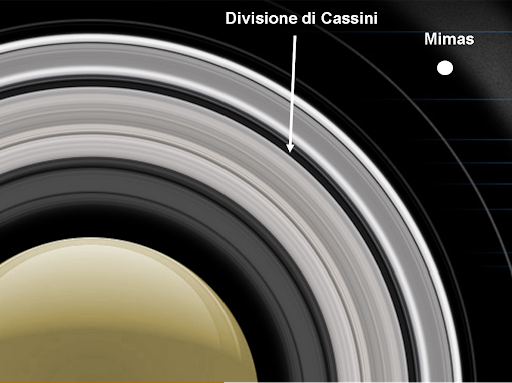
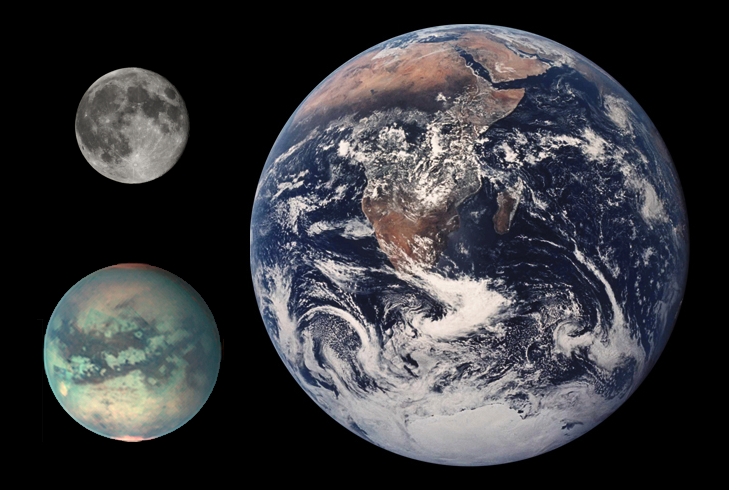
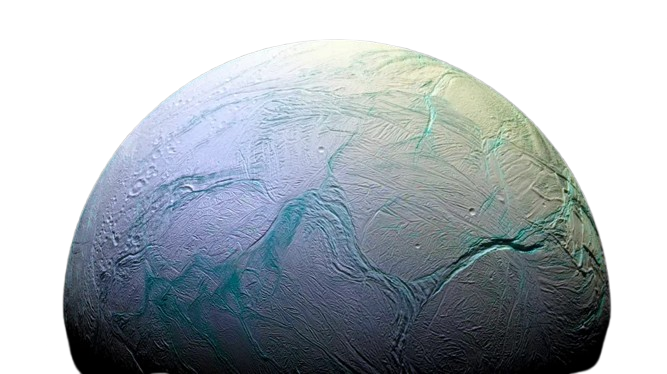

Saturno è il sesto pianeta in ordine di distanza dal Sole, ed è il gigante gassoso.
È molto noto per i suoi anelli e le sue meravigliose lune e, un ottimo posto per famiglie e bambini. Ciò non vuol dire che non sono accolti scienziati e ricercatori.
Infatti, la sua composizione e le sue numerose lune permettono ricerche mai eseguite prima. Con la presenza di ammoniaca, acetilene, etano, propano, fosfina e metano.
LE CASE SU SATURNO
Se volete un'esperienza nella medio-bassa orbita di Saturno consigliamo i moduli abitativi in orbita ravvicinata a Saturno. Sui moduli si potrà avere giornate lunghe e complete con 16 ore di luce e 17.76 ore di buio per un totale di una giornata lunga 33.5 ore circa a velocità di crociera (velocità media)
Vivi un'esperienza unica tra gli anelli di Saturno nelle capsule MCS (Mimas Capsule System)
Un sistema di lancio orbitale dalla luna Mimas verso la Divisione di Cassini (una zona vuota tra i due anelli principali in cui non si rischia di colpire uno dei due anelli

Le Lune
TITANO
Visita Titano per provare un'esperienza unica tra i suoi mari: l'oceano di Titano comincia a 100km sotto la superficie,
raggiungibile tramite gli appositi tunnel.
Inoltre l'atmosfera è stata trasformata grazie alle apposite strutture simili a quelle terrestri.

Ecco un video riassuntivo su Titano!
Risalente al periodo precedente alla sua colonizzazione
ENCELADO
La superficie di Encelado è composta da ghiaccio per i primi 5km con sotto un oceano che si estende per 65km. Lo strato superificiale è principalmento liscio con eventuali crateri, solchi e criovulcani (un vulcano ghiacciato). Sulla superficie ghiacciata è possibile costruire case ed impianti funzionanti tramite idrogeno grazie alla presenza di acqua. Su Encelado avviene il fenomeno del criovulcanismo, che consiste in un vulcanismo simile a quello della Terra. In cui tuttavia al posto della lava e del magma c'è acqua, ghiaccio e vapore acqueo

Lo sapevi che il polo nord di Saturno è esagonale?